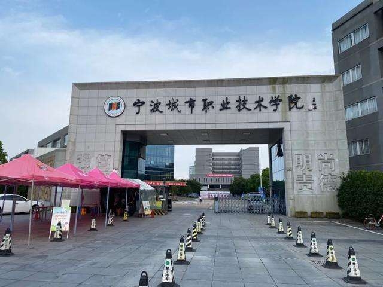
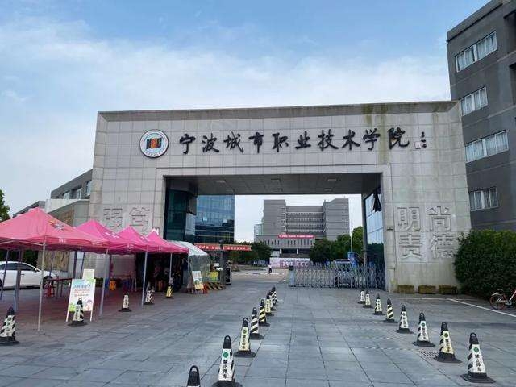

Home
Wang Yuchi(Andy)
 

Self-introduction
Name:Wang Yuchi(Andy) Age:20 The phone number:+86 15355850962 Email:2631086116@qq.com Adress:Ningbo City Vocational and technical college, No. 9, Xuefu Road, Shounan street, Yinzhou District, Ningbo City, Zhejiang. Province, China.
Education background
| Serial number | Timeline | School | Function |
| 1 | 2014/9/1-2017/7/1 | Shaoxing No.1 junior middle school | Monitor |
| 2 | 2017/9/1-2020/7/1 | Shaoxing senior middle school | Monitor |
| 3 | 2020/9/1-2023/7/1 | Ningbo City Vocational and Technical College | Study committee member, director of the rights protection department of the school self management committee. |
Honors
1. English A-level examination certificate. 2. Australian CET-3 certificate. 3. Third prize in the national senior high school English competition. 4. Second prize of national high school computer technology competition.